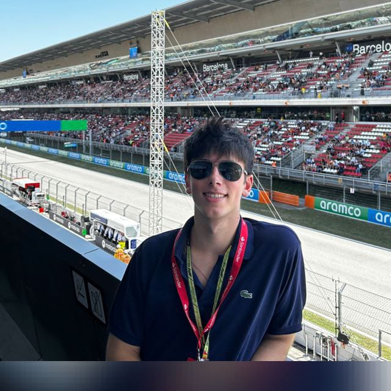
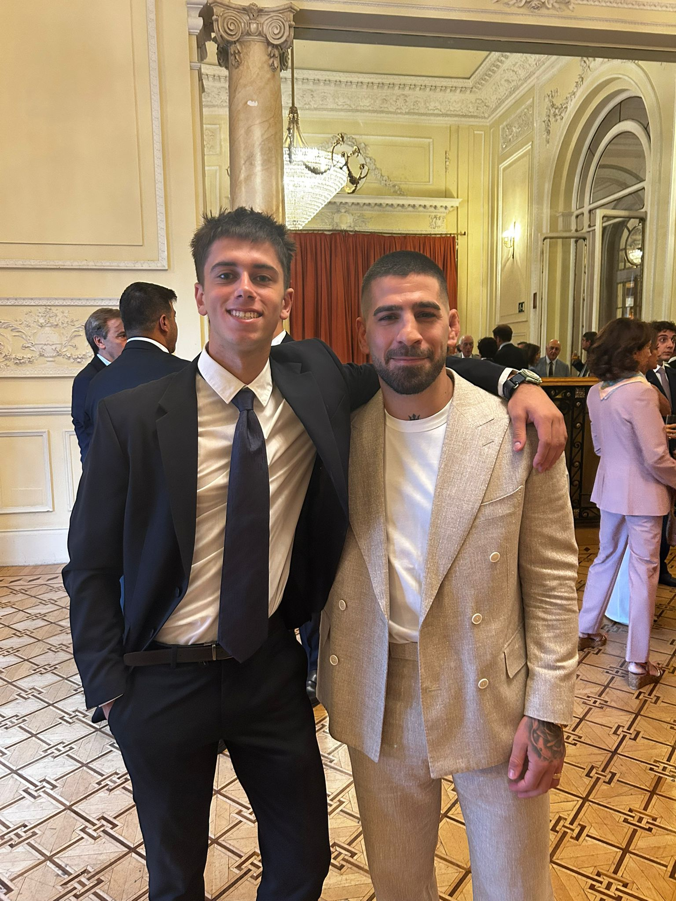

About me
My name is Valentin and I am studying a double degree in Mathematical Engineering and Computer Science. I enjoy mathematics, programming, and learning how technology works.
Curriculum Vitae
- Career: Double degree in Mathematical Engineering and Computer Science
- Skills: HTML, CSS, programming basics, logical thinking
- Languages: Spanish, English
Images
 Here we have a photograph of me on the F1 circuit at Barcelona and also a picture of the most dangerous man in spain (and also Ilia Topuria).